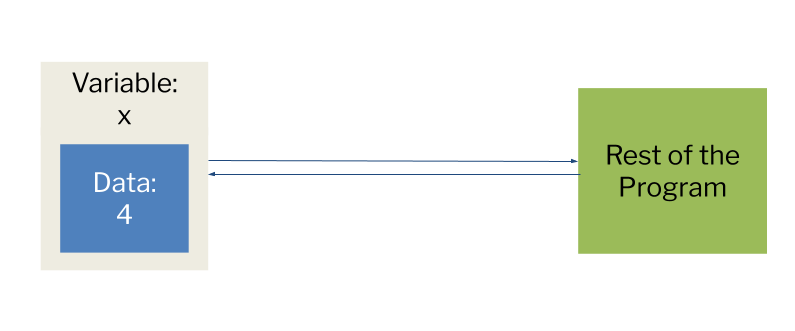

Return STEM;
Introduction to Python
Storing Information
Creating a Variable
Variables In Python
Variable Naming
Data Types
Casting
Vocabulary
Python Concepts
Variables and Data Types
This guide is still under development. We'll be overhauling the Introduction to Python content in the next few months. Stay tuned for more changes and better tutorials!
~ The Return STEM team
Storing Information
- Information is all around you, represented in different ways:
- Amount of apples in a basket: Number
- What day of the week it is: Word
- A series of words: Sentence
- A series of sentences: Paragraph
- There are different ways to store information, each with its own advantages and disadvantages.
- Computers do this too.
- In this lesson, you will learn how to store information, called variables.
Creating a Variable
Variables are one way Python stores information.
You can think of them as containers:

The variable x is storing the value 4. From the point when you assign 4 to x, the program will "see" 4 whenever x is used.
For example, you could use a variable to represent the number of days someone has attended school, a word or sentence, or whether someone has eaten breakfast.
Variables In Python
- Variables are declared like this:
- First, the name of the variable is written.
- Then, the assignment operator
=is used, followed by what you want the variable to be. - In python, the equals sign
=does not mean "equal to". It means assignment . - Instead of thinking it as "a equals 14", think of it as "a is now 14".
- Variables can take on various different data types:
age = 14 # This is an int
height = 5.7 # This is a float
name = "Joe" # This is a string
happy = True # This is a boolean
Using Variables
After creating a variable, you can use that variable in your code. For example,
For example, if you write:
my_variable = "hello world"
print(my_variable)
>>> hello world
The print() function is taking the data stored inside my_variable, which is the string "hello world" and outputting it to the console
Variable Naming
When naming a variable in Python, there are certain rules
The name must start with a letter or underscore (_)
height
The name cannot start with a number
3Timesis not allowedThreeTimesis allowedThe name must contain only alphanumeric characters (letters and numbers) or underscores
Variable names are case sensitive
DAYS,Days, anddaysare different variablesKeywords cannot be used as variable names
Tip: Use names that would make sense to you and anyone reading your program. For example, if you are working with a program with many numbers, use names that would help you identify the difference easily.
There are many methods used to make your code more readable and understanding when working with variables.
With variables with multiple words in the name, use snake case
- Snake case has lowercase letters with underscores between each word
number_of_days_fishingandyears_passedare snake case variable names
- Camel case is similar to snake case but doesn’t underscores. Instead, the you use a capital letter to indicate the start of a new word(the first letter however is lowercase
thisIsCamelCaseis an example of camel case
- Snake case has lowercase letters with underscores between each word
Variable names should be concise and explain what the purpose of the variable is
- Ex:
rect_lengthis a shorter and better way to name a variable that stores the length of a rectangle thanthe_length_of_the_rectangle
- Ex:
Python Keywords
and
as
assert
break
class
continue
def
del
elif
else
except
False
finally
for
from
global
if
import
in
is
lambda
None
nonlocal
not
or
pass
raise
return
True
try
while
with
yield
[Keywords Reference]((https://www.w3schools.com/python/ref_keyword_and.asp)
Is the variable name acceptable?
| Variable Name | Variable Purpose |
|---|---|
days_passed_since_the_start_of_the_school_year | How many school days there have been so far. |
temperatureOnChristmas | The temperature on Christmas. |
hours_slept | How many hours one has slept. |
%rain | The percent chance of rain in the forecast |
24hours? | If something has lasted for 24 hours. |
rainy_days | If it snows today or not. |
total_cost | The total cost of the items bought. |
print | If someone can print a specific paper. |
Data Types
What is a data type?
- Data Types are different ways to represent data.
- Each data type has its own properties and behaves differently
- Numeric Data Types (int, float):
- Numeric data types represent numbers
- Lets us do arithmetic with numbers
- Numeric data types represent numbers
- Sequence Data Types:
- Stores a collection of data
- Strings store a sequence of individual characters (a word is a sequence of letters, and a sentence is a sequence of words)**
- Lets us organize data
- Stores a collection of data
Integers
Integers, or int for short, represent positive or negative whole numbers.
Examples: -100, -10, 0, 60, 85, 4529
We can use integers to represent things like the number of wheels on a car, or students in a classroom, etc.
You can think of integers in Python just like integers in math. They behave similarly and are defined in the same way.
However, integers cannot store decimal points: Python will simply truncate (cut) the decimal away: 8.9 → 8
5.00 → 5
4.20 → 4
Floats
- Floats are a different type of number
- Stands for floating-point number
- They can have decimal points, unlike integers.
- Just like integers, they can be signed (positive or negative).
- Examples of Floats:
- 9.0
- 5.55
- 3.33333333
- 5.9450
- Floats can be used for things like temperature (84.6), grade averages (95.5), or any number that might not be in whole numbers.
Strings
- A string is a sequence of characters
- A character is a single number, letter, or symbol
'f','y','7','?',';'are all characters
- A character is a single number, letter, or symbol
- A string is made up of multiple characters
"hello"is a string made up of the characters'h','e','l','l','o'
- All strings are surrounded by quotes
"" - Strings can be used to represent abbreviations, words, sentences, anything that can be written as text
Examples:
"NASA"
"manager"
"Learning the English language can seem overwhelming."
"df75ac75-abaf-433b-a72b-836f8d9afd84"
String concatenation is "adding" multiple strings together
For example, if you have two different strings, you can combine to create the sentence
If you want to print a string x times, you can "multiply" it by x.
x = "I had "
y = "pizza today."
print(x+y)
>>> I had pizza today.
x = "Python "
print(5*x)
>>> Python Python Python Python Python
Booleans
- Booleans (
bool) can either beTrueorFalse - They can be used for things like:
- Whether a student is in school or not
- If there are more than 6 eggs in the carton
- Whether the student is vegetarian or not
- If a question can be answered with yes/no, it can be answered with a boolean
- Booleans can be represented with numeric values, where any number other than 0 would return
Trueand a 0 would returnFalse- A 5 would return
True
- A 5 would return
- An empty string (
"") will returnFalsewhen casted to boolean, any other string will returnTrue
type()
To retrieve the data type of a variable, the type() function can be used:
a = 10
b = 2.5
c = "Hello World"
d = False
type(a)
>>> <class 'int'>
type(b)
>>> <class 'float'>
type(c)
>>> <class 'str'>
type(d)
>>> <class 'bool'>
What data type would work best?
- The number of customers a shop serves each day
- The average amount of money spent by each customer in a certain shop
- Whether a student has turned in their homework or not
- The license plate of a car
- Your date of birth (Month DD, YYYY)
- A discount for a certain item (10% off, etc.)
- A Phone number (### - ### - ####)
- Pi, using π = 3.1415
- Whether someone is above the age of 18
What is the data type?
"January"235.0"Hello I am John"123453241.05True"False"7"5.0"- `Fall
Data Types Chart
| Data Type | Python syntax | What is it? | Example | |
|---|---|---|---|---|
| Integer | int | Positive or negative whole numbers | Number of wheels on a truck | 10 |
| Float | float | Positive or negative decimals | Body temperature | 97.951 |
| Boolean | bool | A condition; True or False | I have three dollars in my pocket | False |
| String | str | A collection of characters (numbers, symbols, letters, etc.) | What is my dog's name? | "Spot" |
Casting
Notice that 5 and "5" are considered differently to Python.
This is because one is an int, and the other a string.
Or, for example, 5 and 5.0 are considered differently, because one is an int, and other a float.
If I have a string "5", I need to make it an int to add it.
Python has special functions to convert the types of these values.
By using int(), float(), bool(), or str(), we can change the type of a variable with casting
Casting has certain features, outlined in this table:
| Function | Result | Behavior with: | |||
|---|---|---|---|---|---|
| int | float | bool | str | ||
| int() | int | Already an int | int(5.3) → 5 | int(True) → 1 int(False) → 0 | int("10") → 10 |
| float() | float | float(5) → 5.0 | Already a float | float(True) → 1.0 float(False) → 0.0 | float("3.5") → 3.5 |
| bool() | bool | bool(5) → True bool(0) → False | bool(5.3)→ True bool(0.0)→ False | Already a bool | bool("pie") → True bool("") → false |
| str() | str | str(5) → "5" | str(5.3) → "5.3" | str(True) → "True" str(False)→ "False" | Already a str |
a = 10
b = 2.5
c = "Hello World"
d = False
e = 0
f = "5"
print(bool(e))
>>> False
print(bool(a))
>>> True
print(int(b))
>>> 2
print(f + a)
>>> TypeError
print(int(f) + a)
>>> 15
Vocabulary
| Word | Definition |
|---|---|
| Variable | A container for storing data. The data can be changed throughout the program. |
| Assignment Operator | =; assigns a value to a variable. |
| Integer | A positive or negative whole number. They cannot be decimals. |
| Float | A positive or negative decimal. |
| Boolean | A condition. True or False. |
| String | A sequence of characters, or letters, numbers, and symbols. A string is surrounded by quotes to tell Python it is a string. |
| Signed | Positive or negative. Integers and floats are signed, so they can have positive or negative values. |
| Truncation | The removal of the decimal point and any numbers following it. |
| Snake Case | The method to write variable names. Words are all lowercase and have underscores separating them. |
| Camel Case | Another method used to write variable names. The first letter of each word is capitalized excluding the first word. |
Python Concepts
| Word | Definition |
|---|---|
| Variable Assignment | variable_name = Value This tells Python that variable_name is the value. |
| int() | Converts a float, bool, or string to an int. |
| float() | Converts an int, bool, or string to a float. |
| bool() | Converts an int, float, or string to a boolean. |
| str() | Converts an int, float, or boolean to a string. |
| type() | Returns the data type of a variable. |
| round() | Rounds a float instead of truncating it. |